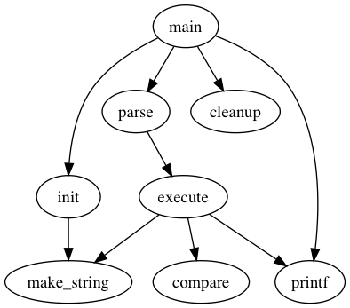
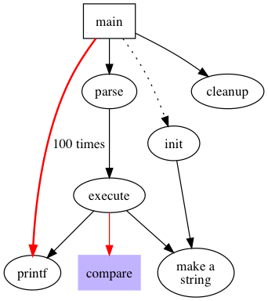
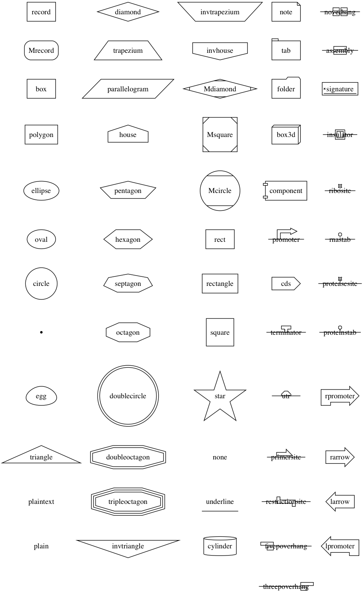
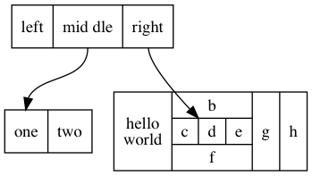
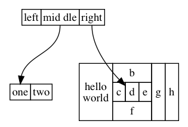
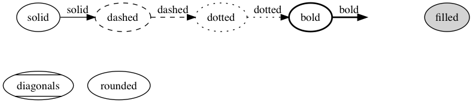
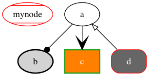

使用 dot 画图工具
Table of Contents
1 Graphviz 画图工具和 dot 语言
Graphviz 是一个由 AT&T 实验室启动的开源工具包，用于绘制 dot 语言脚本描述的图形。 类似微软的 visio，但是他和 visio 也有很大的不同，他是用代码绘图的，使用一种名 为 dot 的语言绘图，对于绘制复杂的流程图，类图等非常好用。 这种设计使得用户更关 注于逻辑关系，实现 "所思即所得"。Graphviz 的自动布局功能，无需人为干预就可以做 到 "最小化连线交叉"。
2 基本画图
dot 可以生成 GIF, PNG, SVG, PDF 和 PostScript 格式的图片。dot 语言画图的类别可 以分成以下两类：
digraph有向图graph无向图
2.1 图的基本元素
每种图中包含以下常见要素：
node节点edge边subgraph子图attr属性
digraph basicGraph {
main -> parse -> execute;
main -> init;
main -> cleanup;
execute -> make_string;
execute -> printf
init -> make_string;
main -> printf;
execute -> compare;
}
- dot 语言中每个变量表示一个节点
->表示连接边- 使用 dot 命令编译生成 PNG 图片，示例如下：
dot -Tpng fig.dot -o fig.png

2.2 图的属性
在绘制图的时候一般需要根据需求来设置节点和边的属性，如下例子中
digraph graphAttrs {
size ="4,4";
main [shape=box]; /* this is a comment */
main -> parse [weight=8];
parse -> execute;
main -> init [style=dotted];
main -> cleanup;
execute -> { make_string; printf}
init -> make_string;
edge [color=red]; // so is this
main -> printf [style=bold,label="100 times"];
make_string [label="make a\nstring"];
node [shape=box,style=filled,color=".7 .3 1.0"];
execute -> compare;
}
size设置图片大小为 4,4（英尺）- 节点和边的属性写在方括号里
shape=box设置节点形状为方框- 花括号表示一个节点连接多个节点
execute -> { make_string; printf}等同于execute -> make_string; execute -> printf; - 节点和边的文字可以使用
label属性来设置

3 图的属性介绍
主要的属性可以参考attrs。
3.1 节点形状
节点属性默认设置为 shape=ellipse, width=.75, height=.5 并且使用节点的名字作
为其 label 。节点的形状见 shapes 。

- 节点的形状分为两类
polygon-based和record-based - 除了
record和Mrecord属于record-based以外，其它都是polygon-based polygon-based一般直接作为形状record-based可以用于递归定义
digraph graphLabel {
node [shape=record];
struct1 [label="<f0> left|<f1> mid\ dle|<f2> right"];
struct2 [label="<f0> one|<f1> two"];
struct3 [label="hello\nworld |{ b |{c|<here> d|e}| f}| g | h"];
struct1:f1 -> struct2:f0;
struct1:f2 -> struct3:here;
}
|用来分隔域<>里面是 fieldid- label 里面的空格和换行符需要转义

3.2 标签文字
标签文字默认是
- 换行需要转义，其中
\n,\l,\r分别表示换行居中，靠左和靠右。 - graph 和 cluster subgraph 也有 label，默认在图片正下方，
labelloc=t将 label 移到图的上方，labelloc=b将图片移到下面。labeljust=r文字靠右。 - 字体默认是 "Times-Roman 14", 可以设置
fontname,fontsize和fontcolor这些属性。例如：fontname=Helvetica - 边可以设置两端的 label，
headlabel和taillabel，以及 label 的字体labelfontname,labelfontsize和labelfontcolor，另外如果有需求也可以 设置labelangle和labeldistance
3.3 HTML 类型标签
digraph graphHtmlLabel {
node [shape=plaintext]
struct1 [label=<
<TABLE BORDER="0" CELLBORDER="1" CELLSPACING="0">
<TR><TD>left</TD><TD PORT="f1">mid dle</TD><TD PORT="f2">right</TD></TR>
</TABLE>>];
struct2 [label=<
<TABLE BORDER="0" CELLBORDER="1" CELLSPACING="0">
<TR><TD PORT="f0">one</TD><TD>two</TD></TR>
</TABLE>>];
struct3 [label=<
<TABLE BORDER="0" CELLBORDER="1" CELLSPACING="0" CELLPADDING="4">
<TR>
<TD ROWSPAN="3">hello<BR/>world</TD>
<TD COLSPAN="3">b</TD>
<TD ROWSPAN="3">g</TD>
<TD ROWSPAN="3">h</TD>
</TR>
<TR>
<TD>c</TD><TD PORT="here">d</TD><TD>e</TD>
</TR>
<TR>
<TD COLSPAN="3">f</TD>
</TR>
</TABLE>>];
struct1:f1 -> struct2:f0;
struct1:f2 -> struct3:here;
}
<TD>的 PORT 表示单元格的名称

3.4 节点和边的样式
节点和边的颜色使用 color 属性来设置， color 接收以下几种类型的值：
- X11 的颜色名称，例如： red, yellow, green
- 0 到 1 之间表示 HSB 的三元组，例如： "0.83, 0.48, 0.85"
- 十六进制的 RGB 值，例如： "#DA70D6"
通过 fontcolor 和 fontname 设置字体颜色，例如： fontcolor=white;
fontname=Helvetica; 。样式 style 也有预定义的值，线条属性包括： solid,
dashed, dotted, bold 和 invis；节点属性包括：filled, diagonals 和 rounded。
digraph graphStyle {
solid -> dashed[style=solid; label=solid];
dashed -> dotted[style=dashed; label=dashed];
dotted -> bold[style=dotted; label=dotted];
bold -> invis[style=bold; label=bold];
solid -> diagonals[style=invis; label=invis];
solid[style=solid];
dashed[style=dashed];
dotted[style=dotted];
bold[style=bold];
invis[style=invis];
filled[style=filled];
diagonals[style=diagonals];
rounded[style=rounded];
{ rank=same solid dashed dotted bold invis filled}
{ rank=same diagonals rounded }
}

边有 dir 属性来设置箭头方向，包括：forward, back, both 和 none。还有一些可
以控制箭头的头和尾样式的属性 arrowhead 和 arrowtail 。箭头样式包括：
normal, inv, dot, invdot, odot, invodot, empty 和 none 等等。 arrowsize 设
置箭头的长度，例如 arrowsize=2.0 可以将箭头长度扩大两倍。
digraph graphArrows {
mynode [color=red; style=diagonals];
b[style="bold,filled"];
c[shape=box,style="bold,filled",color="#24a222",fillcolor="#ff7f00"fontcolor=white];
d[shape=Mrecord,style=filled,color="red",fillcolor="#666666"fontcolor=white];
a -> b [arrowhead=dot];
a -> c [arrowhead=vee; arrowsize=2];
a -> d [dir=back, arrowtail=empty];
}

3.5 图的方向，大小和空隙
nodesep控制同样 rank 节点之间的最小的间距，单位是英尺ranksep控制不同 rank 之间的间距，单位是英尺。例如：ranksep=equally表 示所有的 rank 都是等距的size控制图片大小，单位是英尺。例如:size=x,y, 在命令行中使用-G选项ratio控制图片布局，例如：ratio=compress- 如果
ratio没有设置，根据size进行绘图 - 如果
ratio=x，x 是一个浮点数，对图片大小进行等比缩放 - 如果
ratio=fill并且size=x,y图片根据 x，y 来进行布局 - 如果
ratio=compress并且size=x,y根据 x，y 来布局，然后压缩图形 - 如果
ratio=auto并且设置page属性并且图不能在一页中画满，那么size将被忽略
- 如果
- 如果
rotate=90并且orientation=landscape，旋转 90 度水平作图 page=x,y属性输出页的长宽